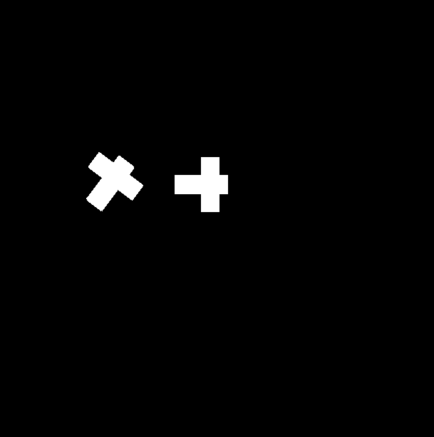

Map Contour Editor (jQuery)
When you are need to make contour map for some image you can use this contour editor - very simple and very useful.
You can create new imagemap polygon or you can use "magicStick" (which similar to Photoshop's "Magic Wand" tool).

Just enable magic stick mode and left click on any white figure and you'll get new contour
How to use
Just use it like this: $(NeededElement).mapContourEditor(Start variables); where NeededElement is an image on your page. After that, you can create new contour manually or semi-automatic by using "magicStick" tool
In simple mode you can create new contour point by click on image, remove points by right click, drag and drop points.
In 'magicStick' polygon will be created by simple click on image
Predefined variables
contour:{} - points array x,y,x1,y1,...,xn,yn
tolerance:20 - color tolerance for 'magic wand' mode
cback:'rgba(120,0,0,0.3)' - contour background color
cborder:'rgba(255,0,0,0.3)' - contour border color
msize:2 - marker size
mback:'rgba(255,255,255,0.5)' - marker background color
mborder:'rgba(255,0,0,0.5)' - marker border color
magicStick:1 - "magic stick" tool mode 0 - disabled, 1 - enabled
Methods
getData - you have to use it like this: $('NeededElement').mapContourEditor('getData','magicStick') to receive value of magicStick variable
setData - set needed variable, for example: $('NeededElement').mapContourEditor('setData',{magicStick:1});
destroy - remove editor object from element $('NeededElement').mapContourEditor('destroy');
Events
There is a only one event now: 'magicStickChange'. Use it like this: $('NeededElement').on('magicStickChange',function(){Magic Stick mode changing handler});
Analyzed and Used
https://github.com/fahrenheit-marketing/jquery-canvas-area-draw - editor
https://github.com/mourner/simplify-js - path points simplifier
Moore Neiborhood algorithm for contour tracing